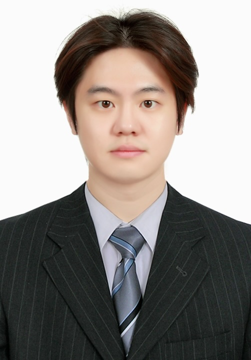

Welcome to EEEL!
Our Goal
The Energy & Environmental Engineering Lab (EEEL) is dedicated to pioneering the transition toward a carbon-negative world through innovative process engineering and molecular-scale science. Our research focuses on developing transformative technologies to address the global climate crisis and resource scarcity, primarily leveraging clathrate hydrate technology for efficient CO2 capture, energy carrier storage, and advanced water treatment. Simultaneously, we are advancing the hydrogen economy by engineering thermochemical pathways for biomass upcycling. By bridging the gap between fundamental chemical thermodynamics and scalable engineering solutions, EEEL strives to create a sustainable synergy between energy production and environmental preservation, providing the technical foundation for a cleaner future.


News & Announcements
EEEL의 최신 공지사항과 활동 성과를 전해드립니다.
Research Areas
EEEL의 핵심 연구 영역 및 학술 가치입니다.

Gas treatment
물 기반 다공성 물질인 클러스레이트 하이드레이트 (Clathrate hydrate)를 이용한 에너지 캐리어 저장, 탄소 포집 및 가스 정제에 대한 연구를 진행하고 있습니다.

Wastewater treatment
해조류를 이용한 금속 흡착, 그리고 클러스레이트 하이드레이트를 이용한 금속 분리 기법을 통해 폐수 처리 및 해수담수화에 관한 연구를 진행하고 있습니다.

Biomass upcycling
수상 바이오매스로부터 고부가가치의 희토류 금속을 추출하고, 바이오수소를 생산하는 업사이클링 공정에 대한 연구를 진행하고 있습니다.
Publications

K. Kim, W. Lee (First author), J. Lee, N. Zafira, S. Jeong, J. Sa, J. W. Lee*, Instantaneous CO2 hydrate nucleation enabled by liable cluster solutions for efficient carbon capture and storage, Chemical Engineering Journal, 2026, 539, 175879. (Link)

K. Kim, J. Lee, W. Lee, N. Zafira, S. Moon, Y. Ahn, J. W. Lee*, High-capacity natural gas storage in a water-framework via compositionally tuned ternary emulsions, Chemical Engineering Journal, 2026, 530, 173351. (Link)

D. Choi, W. Lee, S. Choi, L. Roberson, J. Avalos, A. Moment*, Waste Sargassum Seaweed as a Sustainable Resource for Rare Earth Element Recovery, ACS Sustainable Chemistry & Engineering, 2025, 13, 47, 20476-20485. (Link)

J. Lee, W. Lee (First Author), J. Kang, M. Kim, A. Roh, J. Jeong, J. W. Lee*, Y. Ahn*, Surfactant-stabilized cyclopentane hydrate emulsions for removing tetramethylammonium hydroxide from semiconductor wastewater, Separation and Purification Technology, 2025, 380, 3, 135435. (Link)

T. Vo, H. Kim, K. Kim, W. Lee, N. Zafira, D. Nguyen, J. W. Lee*, Hydrogen production from spent coffee grounds in alkaline conditions using Nisingle bondFe/Al2O3 as a catalyst, Bioresource Technology Reports, 2025, 31, 102271. (Link)

W. Lee (First Author), K. Kim, J. Lee, D. W. Kang, Y. Ahn, S. Lee, Y. Park, J. W. Lee*, Viable hydrate-based CO2 capture facilitated by cyclopentane hydrate seeds and tailored kinetic promoters, Chemical Engineering Journal, 2025, 250, 165846. (Link)

W. Lee (First Author), K. Kim, D. W. Kang, Y. Ahn. J. W. Lee*, Enhanced Hydrate Growth Kinetics with Hydrate Seeds and Promoter under a Static Reaction System, Energy & Fuels, 2025, 39, 5, 2508-2520. (Link)

W. Lee (First Author), J. Lee, K. Kim, Y. Ahn*, J. W. Lee*, Thermodynamic phase equilibria of binary SF6–N2O hydrates and their structural analysis for the hydrate-based greenhouse gas capture, Fluid Phase Equilibria, 2025, 588, 114238. (Link)

W. Lee (First Author), M. Kim, S. Moon, J. W. Lee*, Y. Ahn*, Rapid hydrogen enclathration and unprecedented tuning phenomenon within superabsorbent polymers, Applied Energy, 2026, 377, 124367. (Link)

K. Kim, W. Lee, J. Lee, J. W. Lee*, Water-in-oil emulsions as micro-reactors for achieving extremely rapid and high hydrogen uptakes into clathrate hydrates, Chemical Engieering Journal, 2024, 499, 156666. (Link)

W. Lee (First Author), D. W. Kang, Y. Ahn, K. Kim, J. W. Lee*, Self-supporting hydrate template with hydrate seeds and promoter liquids for semi-continuous formation of hydrogen hydrates, Applied Energy, 2024, 373, 123987. (Link)

K. Kim, D. W. Kang, W. Lee, S. Cho, J. D. Lee, J. W. Lee*, Enhanced methane storage in sH clathrate hydrates directly derived from sII hydrate seeds, Fuel, 2024, 371, 132118. (Link)

D. W. Kang, W. Lee, Y. Ahn, K. Kim, J. W. Lee*, Facile and sustainable methane storage via clathrate hydrate formation with low dosage promoters in a sponge matrix, Energy, 2024, 292, 130631. (Link)

G. Han, W. Lee (First Author), M. Kim, J. W. Lee*, Y. Ahn*, Hydrogen separation from hydrogen-compressed natural gas blends through successive hydrate formations, Chemical Engineering Journal, 2024, 483, 149409. (Link)

W. Lee (First Author), K. Kim, J. Lee, Y. Ahn, J. W. Lee*, Perspectives on facilitating natural gas and hydrogen storage in clathrate hydrates under a static system, Green Chemistry, 2024, 26, 13, 7552-7578. (Link)

Y. Lee, H. Kim, W. Lee, D. W. Kang, J. W. Lee*, Y. Ahn*, Thermodynamic and kinetic properties of CO2 hydrates and their applications in CO2 capture and separation, Journal of Environmental Chemical Engineering, 2023, 11, 5, 110933. (Link)

W. Lee (First Author), D. W. Kang, Y. Ahn, J. W. Lee*, Blended hydrate seed and liquid promoter for the acceleration of hydrogen hydrate formation, Renewable and Sustainable Energy Reviews, 2023, 177, 113217. (Link)

J. Park, W. Lee, J. W. Lee*, Droplet size distribution in a biphasic liquid reactor for understanding the impact of various dual impeller designs on the morphology of S-PVC, Korean Journal of Chemical Engineering, 2023, 40, 46-56. (Link)

D. W. Kang, W. Lee (First Author), Y. Ahn*, Superabsorbent polymer for improved CO2 hydrate formation under a quiescent system, Journal of CO2 Utilization, 2022, 61, 102005. (Link)

D. W. Kang, W. Lee, Y. Ahn, J. W. Lee*, Exploring tuning phenomena of THF-H2 hydrates via molecular dynamics simulations, Journal of Molecular Liquids, 2022, 349, 118490. (Link)

W. Lee (First Author), D. W. Kang, Y. Ahn*, J. W. Lee*, Rapid Formation of Hydrogen-Enriched Hydrocarbon Gas Hydrates under Static Conditions, ACS Sustainable Chemistry & Engineering, 2021, 9, 25, 8414-8424. (Link)

D. W. Kang, W. Lee, Y. Ahn*, J. W. Lee*, Confined tetrahydrofuran in a superabsorbent polymer for sustainable methane storage in clathrate hydrates, Chemical Engineering Journal, 2021, 411, 128512. (Link)

J. Min, D. W. Kang, Y. Ahn. W. Lee, M. Cha, J. W. Lee*, Recoverable magnetic nanoparticles as hydrate inhibitors, Chemical Engineering Journal, 2020, 389, 124461. (Link)

S. Baek, W. Lee, J. Min, Y. Ahn, D. W. Kang, J. W. Lee*, Hydrate seeding effect on the metastability of CH4 hydrate, Korean Journal of Chemical Engineering, 2020, 37, 341-349. (Link)

J. Min, D. W. Kang, W. Lee, J. W. Lee*, Molecular Dynamics Simulations of Hydrophobic Nanoparticle Effects on Gas Hydrate Formation, The Journal of Physical Chemistry C, 2020, 124, 7, 4162-4171. (Link)

W. Lee (First Author), J. Min, Y. Ahn, S. Baek, C. Koh, J. W. Lee*, Effect of Naphthenate Formation on the Anti-Adhesive Behavior of Clathrate Hydrates at a Water–Oil Interface, Industrial & Engineering Chemistry Research, 2019, 58, 12, 5674-5070. (Link)
Members

Principal Investigator
이원형 (Wonhyeong Lee)
Assistant Professor, Department of Chemical Engineering, Hongik University
03/2026 - Present: Assistant Professor, Department of Chemical Engineering, Hongik University
09/2024 - 02/2026: Postdoctoral Researcher, University of California, Los Angeles (Advisor: Prof. Alissa Park, Prof. Aaron Moment)
03/2024 - 08/2024: Postdoctoral Researcher, KAIST (Advisor: Prof. Jae W. Lee)
Ph.D., Chemical and Biomolecular Engineering, KAIST (2024) (Advisor: Prof. Jae W. Lee)
M.S., Chemical and Biomolecular Engineering, KAIST (2019) (Advisor: Prof. Jae W. Lee)
B.S., Chemical and Biomolecular Engineering, KAIST (2018)
Students & Researchers
We are looking for motivated undergraduate / graduate students who are specifically interested in the fields of CCUS (Carbon Capture, Utilization, and Storage), biomass upcycling, and wastewater treatment. If you are eager to gain research experience and contribute to environmental sustainability, please reach out.
e-mail: whlee5070@hongik.ac.kr

연구분야: Biomass upcycling

연구분야: Clathrate hydrate

연구분야: Clathrate hydrate

연구분야: Biomass upcycling

연구분야: Clathrate hydrate
Alumni
Gallery
연구실의 학회 참여, 실험실 활동 등 다양한 연구 활동 사진첩입니다.
Hongik University
홍익대학교
Courses
Department of Chemical Engineering, Hongik University